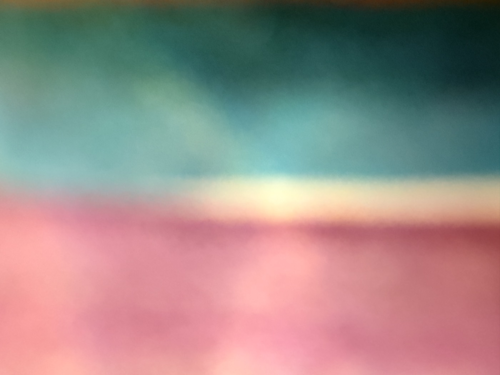

시즌 1 여름 감각 다이빙 · 이번 호의 감각 — 미각·후각
한 통을 다 먹었는데,
맛은 첫 입에만 있었습니다.
수박을 잘라 식탁에 놓고, 한 조각을 집어 들었어요. 첫 입. 시원하고 달았습니다. 그리고 두 번째 조각부터는… 잘 기억이 안 나요. 핸드폰을 보고 있었거든요.
이상하지요. 분명 열 조각쯤 먹었는데, 맛은 첫 입 하나뿐입니다. 나머지 아홉 조각은 어디로 갔을까요.
여름 과일에는 이름이 붙어 있습니다
어르신들과 여름 과일을 이야기한 적이 있어요. "여름 과일이라 하면 수박, 참외가 있지요." 그렇게 말씀은 하시는데, 손은 쉽게 움직이지 않으셨습니다. 한참을 머뭇거리시더니, 이야기가 흘러나왔어요. 과일 이야기가 아니라 그 과일을 먹던 여름 이야기였습니다.
맛은 혼자 오지 않아요. 늘 무언가를 데리고 옵니다. 그때의 마루, 그때의 사람, 그때의 더위 같은 것들을요. 그래서 맛을 잃으면 그 여름도 같이 잃게 되지요.
냄새는 더 오래갑니다
저희 엄마에게서는 흙냄새가 났습니다. 배밭에서 일하고 오시면 나던, 축축한 흙냄새요. 지금도 비 온 뒤에 그 냄새를 맡으면 엄마가 떠올라요. 사진보다 빠르고, 이름보다 정확합니다.
냄새는 설명이 안 돼요. 그냥 알아버리지요. 우리 몸에서 가장 오래된 감각이라 그런가 봅니다.
— 올리한나 드림

이번 호의 감각 처방 · 미각·후각
첫 입은, 눈을 감고 먹습니다
오늘 무엇을 먹든 첫 입만 눈을 감고 드셔보세요. 핸드폰은 뒤집어 두시고요. 딱 그 한 입만요. 차가운지, 단맛이 언제 오는지, 삼킨 뒤에 무엇이 남는지. 그리고 비가 온 뒤에는 창문을 열고 숨을 한 번 크게 쉬어보세요. 그 냄새가 데려오는 사람이 있을 거예요.
수박의 첫 입, 기억하세요?
올여름은 두 번째 입도 기억하시길.